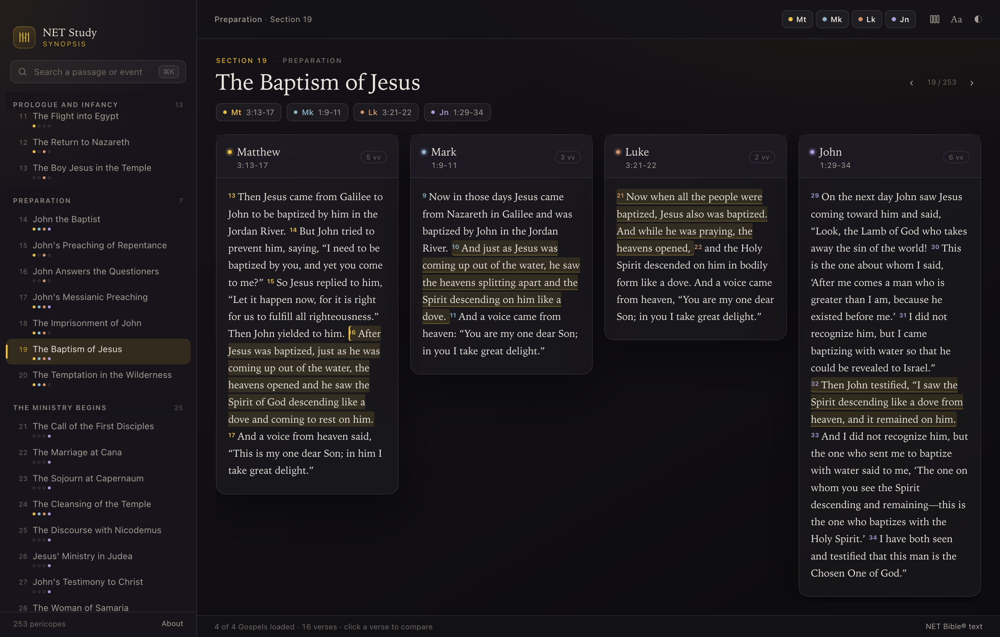

A synopsis, not a harmony · macOS & Windows
One event.
Four witnesses.
The four Gospels side by side, one pericope at a time. Matthew, Mark, Luke and John each in his own column, in his own order, with the verbal echoes between them lit up as you read.
Matthew · Mark · Luke · John253 pericopes · eight parts · Prologue to Ascension

253 pericopes, eight parts
From the Prologue to the Ascension, in the standard synopsis sequence, after Aland.
Wording that rhymes
Hover a verse to see its shared vocabulary in the other Gospels. A reading aid, not a claim about sources.
Built for the keyboard
← → step pericopes, 1–4 toggle a Gospel, ⌘K searches.